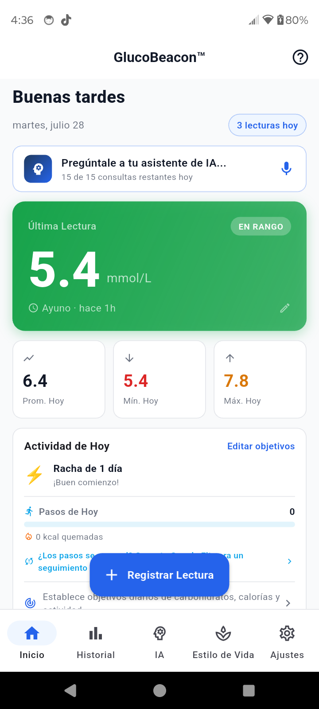
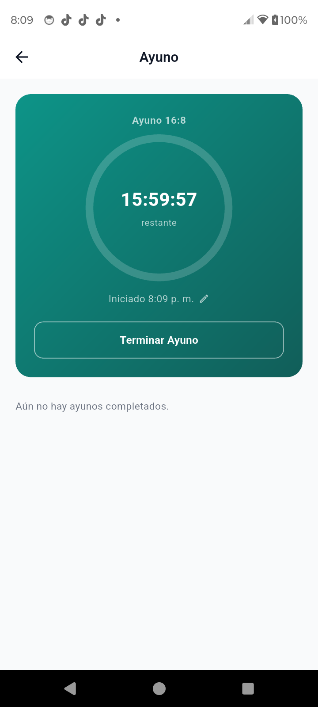
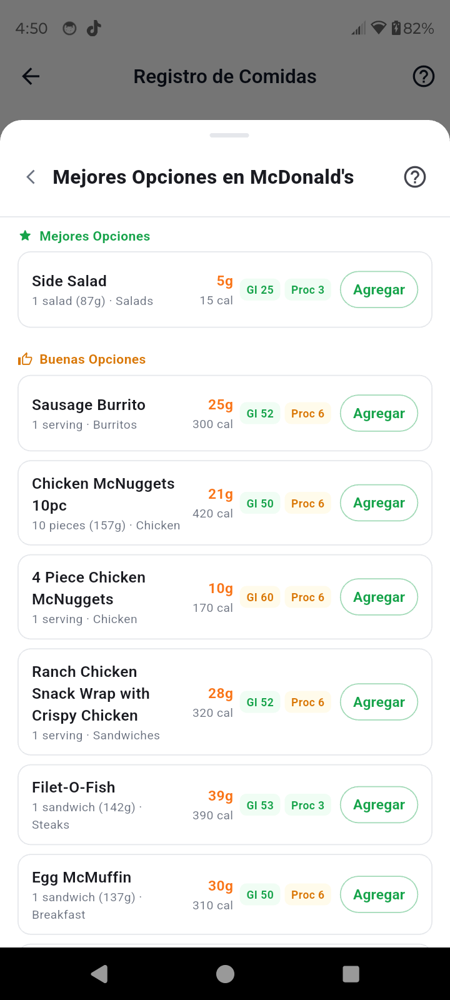
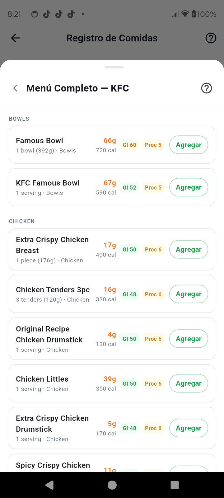
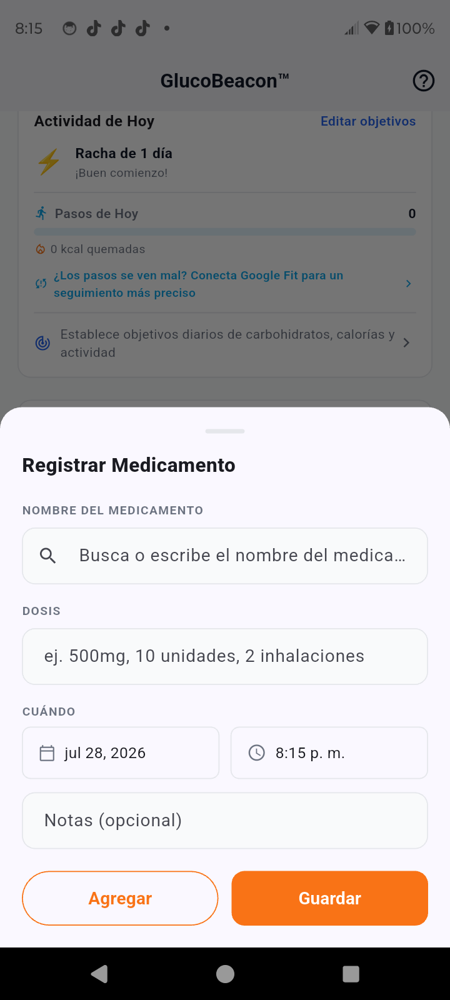
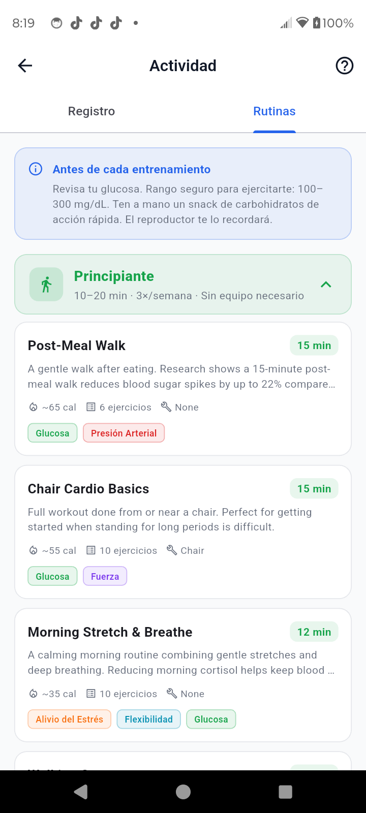
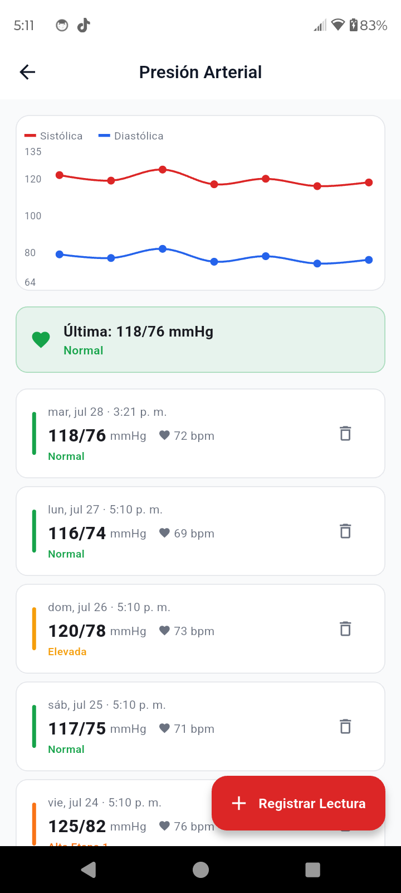
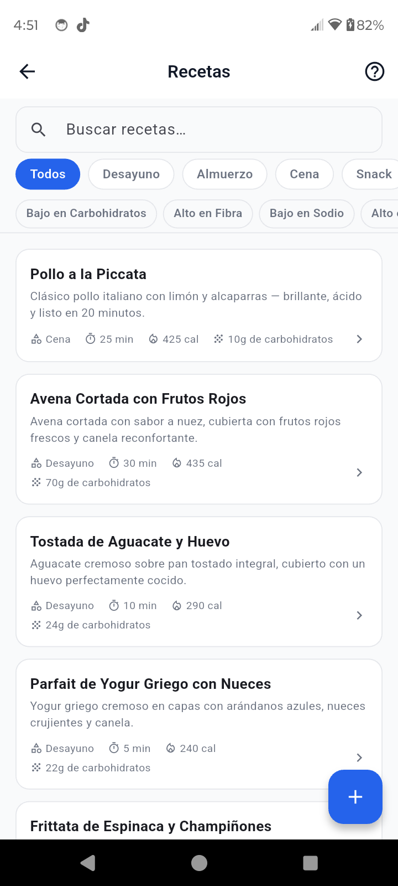
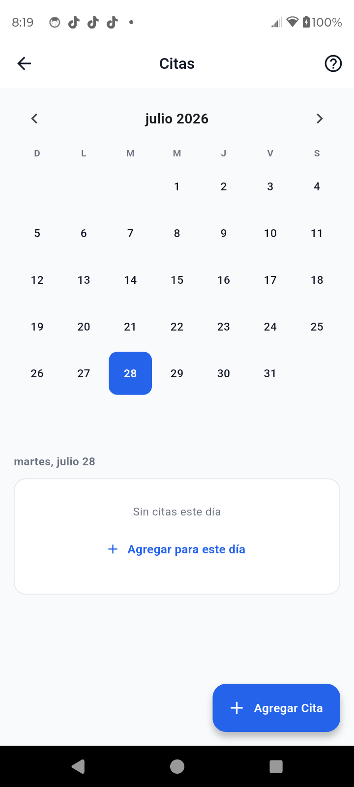

Tus Datos de Salud.
Tu Dispositivo.
Tu Control.
GlucoBeacon te da una imagen completa de tu diabetes — tendencias de azúcar en la sangre, estimaciones de A1C, guía de restaurantes, rutinas de ejercicio, historial de comidas y un coach de IA — todo almacenado de forma privada en tu teléfono. Sin nube. Sin cuentas. Sin comprometer nada.

"He sido diabético Tipo 2 por más de 20 años. Probé las apps de diabetes populares — durante años. Eran torpes, a medio terminar, o construidas alrededor de una suscripción en lugar de alrededor de mí. Ninguna se ajustaba a cómo es realmente un día con diabetes: medicamentos, comidas, citas médicas, presión arterial, todo conectado. Así que construí la app que realmente necesitaba."
Todo lo que necesitas.
Nada de lo que no.
Construida por alguien que entiende que controlar la diabetes es un trabajo serio — GlucoBeacon te da herramientas de nivel clínico en una interfaz limpia y sencilla.
Control de Azúcar en la Sangre
Registra lecturas al instante con retroalimentación codificada por colores. Ve tendencias de 7 días, anillos de tiempo en rango, y un historial completo de cada lectura que has tomado.
Estimador de A1C
Una estimación de A1C en tiempo real usando la fórmula Nathan de la ADA, ponderada por recencia sobre tus últimos 90 días. No se necesita laboratorio.
Asistente de IA para Diabetes
Haz preguntas reales y obtén respuestas personalizadas según tus lecturas reales, tu A1C, medicamentos y objetivos — no consejos de salud genéricos. Impulsado por Claude AI.
Historial de Comidas
¿Vas a registrar ese sándwich de pollo a la parrilla otra vez? Ve exactamente qué pasó la última vez — tu lectura antes de comer, cualquier medicamento que tomaste, la lectura después de comer con la subida real, y si una caminata después marcó una diferencia. Tus propios datos se convierten en tu mejor guía, automáticamente, cada vez que comes algo que ya has probado.
Nuevo: Rastreador de Ayuno
Comienza un ayuno con un solo toque con ventanas de 16:8, 18:6, 20:4, OMAD, o tu propia ventana personalizada. Una cuenta regresiva en vivo y un anillo de progreso te mantienen en curso dentro de la app, y el widget de tu pantalla de inicio cuenta regresivamente junto contigo — "Menos de 1 hora restante", "10 min restantes", "¡Hora de comer!" ¿Olvidaste iniciarlo a tiempo? Corrige la hora de inicio después y todo se recalcula al instante.
Asesor de Restaurantes
¿Comes fuera? GlucoBeacon evalúa cada platillo en 53 cadenas importantes — McDonald's, Chipotle, Panera y más — por impacto glucémico, carbohidratos y calorías contra tus objetivos personales.
Biblioteca de Ejercicios
18 rutinas basadas en evidencia en niveles principiante, intermedio y experto — cada una con notas de seguridad para diabéticos, citas científicas, y un reproductor guiado con temporizador.
Control de Medicamentos
Autocompletado entre más de 120 medicamentos para diabetes y presión arterial, con hasta 3 recordatorios diarios por medicamento para que nunca olvides una dosis.
Despensa y Recetas
Escanea artículos a tu despensa con un lector de código de barras. Explora 120 recetas aptas para diabéticos y ve qué porcentaje de ingredientes ya tienes.
Presión Arterial y Peso
Controla tu panorama cardiovascular completo junto con tu azúcar en la sangre. Gráficas de tendencias, registros de historial y resúmenes de estilo de vida en un solo lugar.
Sincronización con Health Connect
Conecta tu Fitbit, Garmin, Samsung Watch, o dispositivo Wear OS. Pasos, peso, presión arterial, sueño y ejercicio se sincronizan automáticamente vía Android Health Connect.
Citas
Mantén cada cita médica en un calendario integrado con recordatorios, y recibe una alerta automática si dos se superponen. Pídele a tu asistente de IA que agende una por ti.
Widget de Pantalla de Inicio
Registra una lectura, un medicamento, o revisa tus pasos sin siquiera abrir la app — toca el micrófono del widget y solo dilo, échale un vistazo a tus números más recientes, o mira cómo baja tu cuenta regresiva de ayuno, todo desde tu pantalla de inicio.
Pantallas reales. Datos reales.
Cada pantalla está diseñada para mostrar la información que necesitas — rápido. Sin desorden, sin ruido.











Hecho para todo tipo de diabetes.
Ya sea que te diagnosticaron el mes pasado o hayas manejado tu condición por décadas, GlucoBeacon se adapta a ti.
Diabetes Tipo 1
Registro de carbohidratos e insulina por lectura. Detección de patrones que identifica el fenómeno del amanecer, picos después de comer, y bajones nocturnos antes de que se conviertan en un problema.
Diabetes Tipo 2
Guía de restaurantes, evaluación del índice glucémico de alimentos, seguimiento de peso, y cálculos de calorías quemadas basados en MET — el panorama completo de estilo de vida para mantener tu A1C en control.
Prediabetes
Detecta tendencias antes de que avancen. El estimador de A1C y la detección de patrones te dan contexto clínico para conversaciones informadas con tu médico.
Herramientas gratis, directo en tu navegador.
Los mismos datos reales que impulsan la app — utilizables ahora mismo, sin descarga, sin registro.
Calculadora de Carbohidratos y Presupuesto Diario
Busca entre 176 alimentos reales para datos exactos de carbohidratos e IG, calcula carbohidratos netos a partir de una etiqueta, u obtén un objetivo diario de carbohidratos personalizado.
Probar la calculadoraRecetas para Diabéticos
28 recetas de desayuno y snacks con desgloses nutricionales completos y estimaciones de índice glucémico para cada platillo.
Ver recetasEl Blog de GlucoBeacon
Guías prácticas y directas sobre A1C, alimentos de bajo IG, opciones de comida rápida, y la vida diaria con diabetes.
Leer el blogUn precio. Todo incluido.
Sin herramientas a la carta, sin ventas adicionales dentro de la app, sin división "básico" vs. "premium" dentro de Pro. El registro básico de azúcar en la sangre es gratis para siempre — todo lo demás es una sola suscripción.
Facturado en USD vía Google Play. Los montos en moneda local mostrados son estimaciones — tu pago en Play Store muestra el precio exacto en tu moneda.
| Función | Gratis | Pro |
|---|---|---|
| Registro de Azúcar en la Sangre (ilimitado) | ✓ | ✓ |
| Historial de Lecturas | Últimos 90 días | Ilimitado |
| Registro de Medicamentos | ✓ | ✓ |
| Contador de Pasos y Widget de Pantalla de Inicio | ✓ | ✓ |
| Rastreador de Ayuno (temporizador, cuenta regresiva en widget) | ✓ | ✓ |
| Recordatorios | Hasta 3 | Ilimitados |
| Estimador de A1C y Detección de Patrones | Solo vista previa | Detalle completo |
| Historial de Comidas (antes/medicamentos/después/actividad) | ✗ | ✓ |
| Informe PDF para el Médico | ✗ | ✓ |
| Pestaña Completa de Estilo de Vida (comida, sueño, citas) | ✗ | ✓ |
| Asesor de Restaurantes (53 cadenas) | ✗ | ✓ |
| Despensa, Recetas y Biblioteca de Ejercicios | ✗ | ✓ |
| Sincronización con Health Connect | ✗ | ✓ |
| Asistente de IA para Diabetes | 3 consultas de por vida | 15 consultas/día |
Todos los planes incluyen acceso Pro completo y comienzan con 14 días gratis. Cancela mensual o anual cuando quieras.
Tus datos de salud te pertenecen.
En una industria donde los datos de salud se compran y se venden, GlucoBeacon es diferente. Todo se queda en tu dispositivo — siempre.
No se Necesita Cuenta
Abre la app y empieza a registrar. Sin correo, sin contraseña, sin perfil que crear.
Almacenamiento en el Dispositivo
Tus lecturas, medicamentos y registros viven en una base de datos SQLite en tu teléfono — nunca se suben, nunca se sincronizan con nosotros.
Sin Venta de Datos
No recopilamos, analizamos, ni vendemos tu información de salud. No hay un "nosotros" en tus datos.
Respaldo Opcional
Si quieres respaldo, conecta tu propio Google Drive. El archivo va a tu cuenta, no a la nuestra.
Reportes Anónimos de Fallos
Si la app llega a fallar, un reporte técnico — modelo del dispositivo y rastro del error, nunca tus datos de salud — nos ayuda a corregirlo. Eso es lo único que se envía automáticamente.
Respuestas directas.
Las cosas que la gente realmente pregunta antes de confiarle sus datos de salud a una app.
No hay sistema de cuentas, y tus datos de salud — lecturas, medicamentos, citas, registros de comida — viven en una base de datos local en tu teléfono y nunca se suben automáticamente. Si quieres un respaldo, va a tu propio Google Drive, no al nuestro. Dos excepciones puntuales y reveladas: si la app falla, se envía un reporte técnico anónimo (modelo del dispositivo y rastro del error — nunca tus datos de salud) para ayudarnos a corregir el bug; y si eliges usar el Asistente de IA o el Escaneo de Comida con IA, ese mensaje o foto específico se envía para generar una respuesta y no se almacena después.
Bueno para comidas frescas, caseras y de restaurante — para eso está diseñado. Para productos empaquetados, usa el Escáner de Código de Barras en su lugar: obtiene datos nutricionales reales de Open Food Facts en lugar de estimarlos a partir de una foto, así que es exacto donde la estimación por IA no puede serlo. ¿Se equivocó? Un toque elimina un artículo mal identificado y recalcula tu total al instante. ¿Faltó algo? Escríbelo y obtén una estimación separada e instantánea para ese artículo — sin necesidad de volver a tomar la foto.
El registro de azúcar en la sangre, el seguimiento y recordatorios de medicamentos, el contador de pasos y el widget de pantalla de inicio son gratis, permanentemente, sin límite de prueba. Pro desbloquea todo lo demás — historial de comidas, tendencias completas de A1C, asesor de restaurantes, biblioteca de ejercicios, asistente de IA y más — y cada plan comienza con 14 días de Pro gratis, para que puedas probar el kit de herramientas completo antes de pagar algo.
No — y eso es a propósito. GlucoBeacon está construida en torno al registro tradicional con punción digital, que sigue siendo la forma en que la mayoría de las personas con diabetes realmente se monitorean, ya sea por elección, indicación médica, o porque un MCG no está cubierto por su seguro. La sincronización con Health Connect cubre pasos, peso, presión arterial, sueño y ejercicio desde tu teléfono o reloj. Actualmente no ofrecemos transmisión de MCG en tiempo real — si eso es indispensable para ti, apps construidas alrededor de un MCG específico te servirán mejor.
Sí — para eso está hecho el Informe PDF para el Médico. Compila tus lecturas, estimación de A1C y patrones en un reporte formateado para una cita real, no un volcado de datos sin procesar.
Cada plan Pro — mensual o anual — comienza con 14 días de acceso completo, gratis. Google Play requiere un método de pago registrado para iniciar la prueba, pero no se te cobrará hasta que termine, y puedes cancelar en cualquier momento antes de eso sin ningún cargo. Las compras de por vida son un pago único y no forman parte de la prueba.
Sé el primero en saber cuándo lanzamos.
GlucoBeacon llega pronto a Google Play con 14 días de Pro, gratis. Déjanos tu correo y te notificaremos en el momento en que esté disponible.
✉️ Recibir Notificación de Lanzamiento